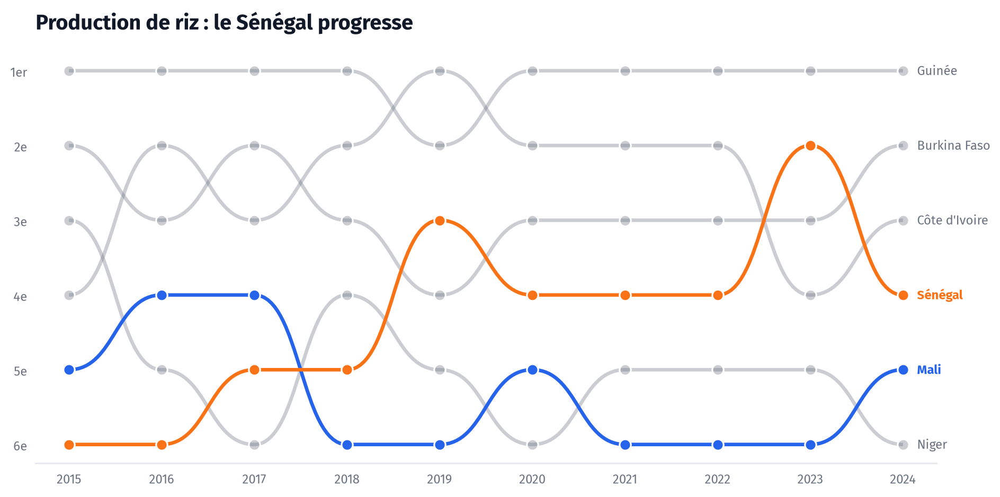
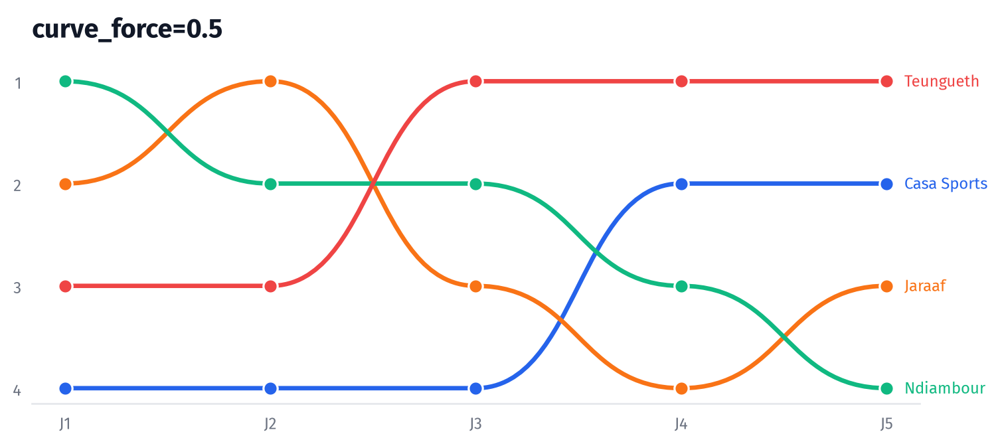
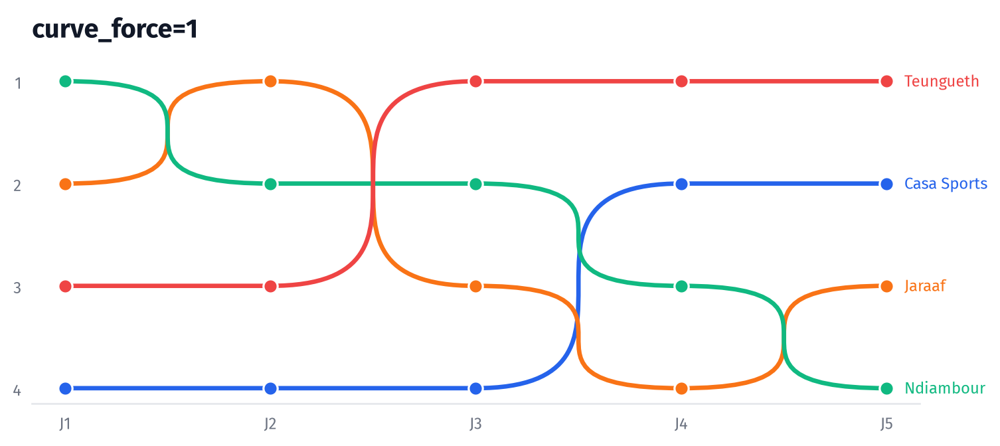
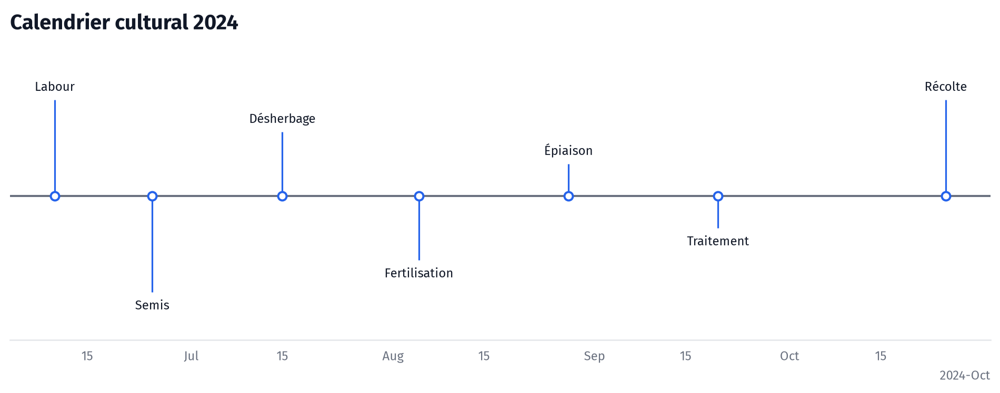
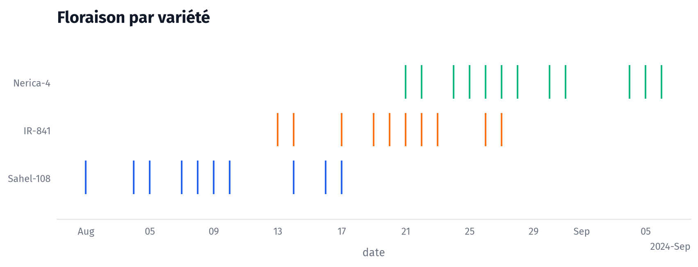
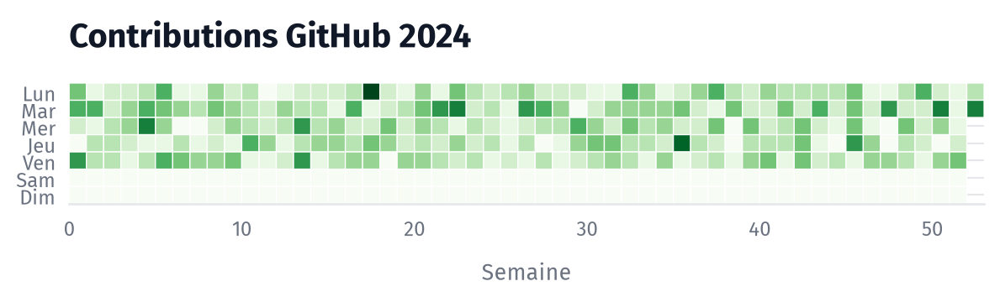

Séries temporelles, calendriers et événements datés.
Tous les exemples utilisent le thème editorial ; chaque graphique suit le thème actif (set_theme(...)). Retour à la galerie.
line — Courbe
Courbe reliant des valeurs successives : une ligne par colonne y, sur un axe x commun (dates, mois, années, doses…).
Quand l’utiliser. Suivre l’évolution d’une ou plusieurs grandeurs dans le temps ou le long d’un gradient ordonné, repérer tendances, saisonnalités et ruptures. À éviter pour des catégories sans ordre (préférer bar).
Données attendues : un DataFrame, une ligne par pas de temps (format large, une colonne par série).
Colonne (exemple)
Type
Rôle
Exemple de valeur
mois
nombre, date ou texte ordonné
x : position sur l’axe horizontal
3
ventes
nombre
y : une série (une colonne = une courbe)
18
coûts
nombre
y : autre série, passée dans une liste
12
Paramètres
Paramètre
Défaut
Description
x
obligatoire
Colonne pour l’axe x (dates, catégories, numérique).
y
obligatoire
Une colonne ou une liste de colonnes ; une courbe (et une entrée de légende) par colonne.
Courbes dont la surface sous la ligne est remplie ; avec stacked=True, les séries s’empilent et le haut de la pile donne le total.
Quand l’utiliser. Montrer un volume qui évolue (production, écoutes, surfaces) et, en mode empilé, la contribution de chaque composante au total au fil du temps.
Données attendues : un DataFrame, une ligne par pas de temps, une colonne par série.
Colonne (exemple)
Type
Rôle
Exemple de valeur
annee
nombre ou date
x : temps
2015
rock
nombre
y : première série (aire)
35
pop
nombre
y : autre série
28
Paramètres
Paramètre
Défaut
Description
x
obligatoire
Colonne pour l’axe x.
y
obligatoire
Une colonne ou une liste de colonnes ; une aire par colonne.
alpha
0.7
Opacité du remplissage.
stacked
False
Empile les séries (le haut de la pile = total) au lieu de les superposer.
Aires empilées autour d’une ligne de base centrée et ondulante : un « flux » organique dont l’épaisseur totale varie dans le temps.
Quand l’utiliser. Raconter l’évolution de la composition d’un total sur une longue période (genres, espèces, produits) quand la forme générale compte plus que les valeurs exactes.
Données attendues : un DataFrame, une ligne par pas de temps, une colonne par composante.
Colonne (exemple)
Type
Rôle
Exemple de valeur
annee
nombre ou date
x : temps
2010
rock
nombre
y : épaisseur d’une composante
35
jazz
nombre
y : autre composante
8
Paramètres
Paramètre
Défaut
Description
x
obligatoire
Colonne pour l’axe temporel / de période.
y
obligatoire
Liste des colonnes à empiler (une couche par colonne).
Diagramme en bâtons : un trait vertical de la ligne de base à chaque valeur, terminé par un point.
Quand l’utiliser. Valeurs ponctuelles et discrètes dans le temps (pluies journalières, événements comptés, signaux échantillonnés), quand relier les points par une ligne serait trompeur.
Données attendues : un DataFrame, une ligne par observation.
Colonne (exemple)
Type
Rôle
Exemple de valeur
jour
nombre ou date
x : position du bâton
2024-08-03
pluie
nombre
y : hauteur du bâton
24.0
Paramètres
Paramètre
Défaut
Description
x
obligatoire
Colonne de l’axe horizontal.
y
obligatoire
Colonne de l’axe vertical.
baseline
0.0
Niveau de départ des bâtons (0 par défaut).
color
None
Couleur unique (nom, hexadécimal). None : couleur du thème.
Exemple
Un trait par observation depuis une ligne de base : idéal pour des événements ponctuels.
Graphique de classement (bump chart, avec bumplot) : le rang de chaque élément à chaque période, relié par des courbes lissées ; le rang 1 est en haut et les noms sont écrits au bout des lignes.
Quand l’utiliser. Comparer l’évolution des positions relatives (classement d’équipes, de cultures, de pays, de produits) quand l’ordre compte plus que les valeurs. À partir de valeurs brutes (values=True), le rang est calculé à chaque période.
Données attendues : un DataFrame, une ligne par élément et par période (format long), sans période manquante.
Colonne (exemple)
Type
Rôle
Exemple de valeur
saison
nombre ou texte ordonné
x : période
2021
classement
entier, ou nombre avec values=True
y : rang (1 = premier) ou valeur
3
equipe
texte
group : élément classé (une ligne par élément)
Lyon
Paramètres
Paramètre
Défaut
Description
x
obligatoire
Colonne des périodes (années, saisons, journées…).
y
obligatoire
Colonne des rangs (1 = premier), ou des valeurs avec values=True.
group
obligatoire
Colonne des éléments classés (une ligne par élément).
linewidth
2.5
Épaisseur des courbes.
markersize
8
Diamètre des points (points).
values
False
y contient des valeurs : le rang est calculé à chaque x (plus forte = 1).
curve_force
0.5
Courbure des liaisons, de 0 (segments droits) à 1 (paliers plats et transitions raides) ; 0.5 = sigmoïde douce.
highlight
None
Groupes mis en couleur ; les autres passent en gris clair.
end_labels
True
Écrit le nom de chaque groupe au bout de sa ligne (à la place de la légende).
ordinal
False
Rangs écrits « 1er, 2e, 3e… » sur l’axe vertical.
Résultats calculés : chart.ranks : rangs, une ligne par période et une colonne par élément.
Les courbes de Bézier viennent de bumplot ; les noms sont écrits au bout des lignes (end_labels=False remet une légende).
À partir de valeurs, avec mise en avant
Avec values=True, y contient des valeurs (production, score, ventes) : le rang est calculé à chaque période, la plus forte valeur étant 1re. highlight met quelques éléments en couleur et passe les autres en gris ; ordinal=True écrit « 1er, 2e… ».
rng = np.random.default_rng(4)pays = ['Sénégal', 'Mali', 'Niger', 'Burkina Faso', "Côte d'Ivoire", 'Guinée']production = pd.DataFrame( [(a, p, 100+40* k + rng.normal(0, 35) + (12* (a -2015) if p =='Sénégal'else0))for a inrange(2015, 2025) for k, p inenumerate(pays)], columns=['annee', 'pays', 'production'])chart = (Chart(production, figsize=(10, 5)) .bump('annee', 'production', 'pays', values=True, highlight=['Sénégal', 'Mali'], ordinal=True) .title('Production de riz : le Sénégal progresse') .tight_layout())chart.show()chart.ranks.tail(3) # rangs calculés : une ligne par année, une colonne par pays

Rang de six pays selon leur production de riz (données fictives)
Burkina Faso
Côte d'Ivoire
Guinée
Mali
Niger
Sénégal
annee
2022
3
2
1
6
5
4
2023
3
4
1
6
5
2
2024
2
3
1
5
6
4
Courbure des liaisons
curve_force va de 0 (segments droits) à 1 (paliers plats et transitions raides) ; 0.5, la valeur par défaut, donne une sigmoïde douce.
journees = pd.DataFrame( [(j, e, r) for j, perm inzip(['J1', 'J2', 'J3', 'J4', 'J5'], [[1, 2, 3, 4], [2, 1, 3, 4], [2, 3, 1, 4], [3, 4, 1, 2], [4, 3, 1, 2]])for e, r inzip(['Ndiambour', 'Jaraaf', 'Teungueth', 'Casa Sports'], perm)], columns=['journee', 'equipe', 'rang'])for force in (0, 0.5, 1): (Chart(journees, figsize=(8, 3.6)) .bump('journee', 'rang', 'equipe', curve_force=force) .title(f'curve_force={force}') .tight_layout() .show())
Même classement, trois courbures


timeline — Frise chronologique
Frise chronologique : chaque événement est une tige posée sur un axe des dates, avec son libellé, alterné dessus/dessous.
Quand l’utiliser. Présenter les étapes d’un projet, d’une campagne agricole, d’une histoire ; repérer les intervalles entre événements datés.
Données attendues : un DataFrame, une ligne par événement.
Colonne (exemple)
Type
Rôle
Exemple de valeur
date
date
date : moment de l’événement
2024-06-20
etape
texte
label : libellé affiché
Semis
Paramètres
Paramètre
Défaut
Description
date
obligatoire
Colonne des dates (ou nombres) des événements.
label
obligatoire
Colonne des libellés affichés au bout des tiges.
levels
None
Hauteurs des tiges (liste) ; None = hauteurs alternées automatiques.
color
None
Couleur unique (nom, hexadécimal). None : couleur du thème.
Exemple
Des événements datés, chacun avec sa tige et son libellé, alternés au-dessus et au-dessous.
(Chart(calendrier, figsize=(10, 4)) .timeline('date', 'etape') .title('Calendrier cultural 2024') .tight_layout() .show())

Calendrier cultural de la campagne
eventplot — Événements par groupe
Diagramme d’événements : un petit trait par occurrence, une rangée par groupe.
Quand l’utiliser. Comparer la répartition dans le temps d’événements répétés : dates de floraison par variété, passages d’animaux, pannes, arrivées.
Données attendues : un DataFrame, une ligne par événement.
Colonne (exemple)
Type
Rôle
Exemple de valeur
date
date ou nombre
time : instant de l’événement
2024-09-12
variete
texte
group (optionnel) : une rangée par groupe
Sahel-108
Paramètres
Paramètre
Défaut
Description
time
obligatoire
Colonne des instants (dates ou nombres).
group
None
Colonne de regroupement : une couleur (et une entrée de légende) par groupe.
linelength
0.7
Hauteur de chaque trait, en fraction de l’écart entre rangées.
linewidth
1.5
Épaisseur des lignes.
Exemple
Un trait par événement, une ligne par groupe : dates d’observation, stades phénologiques…
(Chart(floraison, figsize=(9, 3.5)) .eventplot('date', group='variete') .title('Floraison par variété') .tight_layout() .show())

Dates de floraison observées par variété
calendar_heatmap — Calendrier de contributions
Calendrier coloré : une case par jour, semaines en colonnes et jours de la semaine en lignes (style GitHub).
Quand l’utiliser. Repérer des rythmes hebdomadaires et saisonniers dans une activité quotidienne (observations, ventes, pluies, contributions).
Données attendues : un DataFrame, une ligne par jour.
Colonne (exemple)
Type
Rôle
Exemple de valeur
date
date
date_col : jour
2024-03-14
commits
nombre
value_col : intensité de la case
5
Paramètres
Paramètre
Défaut
Description
date_col
obligatoire
Colonne avec les dates (tout format analysable par pd.to_datetime).
value_col
obligatoire
Colonne numérique déterminant l’intensité de couleur des cellules.
cmap
'YlGn'
Nom du colormap.
Exemple
np.random.seed(0)dates = pd.date_range('2024-01-01', '2024-12-31')commits = np.random.poisson(3, len(dates))# pas de commits les week-endscommits[dates.dayofweek >=5] =0df = pd.DataFrame({'date': dates, 'commits': commits})(Chart(df) .calendar_heatmap('date', 'commits', cmap='Greens') .title('Contributions GitHub 2024') .tight_layout() .show())

Commits GitHub 2024
gantt — Diagramme de Gantt
Diagramme de Gantt : une barre horizontale par tâche, de sa date de début à sa date de fin, colorée par groupe.
Quand l’utiliser. Planifier et suivre un projet, un calendrier cultural ou une campagne de terrain. Pour calculer le chemin critique à partir des durées et dépendances, voir critical_path.
Données attendues : un DataFrame, une ligne par tâche.
Colonne (exemple)
Type
Rôle
Exemple de valeur
tache
texte
task : nom de la tâche (une barre)
Semis
debut
date
start : début
2024-06-20
fin
date
end : fin
2024-07-05
equipe
texte
group (optionnel) : couleur
Terrain
Paramètres
Paramètre
Défaut
Description
task
obligatoire
Colonne avec les noms des tâches (utilisée comme étiquettes de l’axe y).
start
obligatoire
Colonne avec les dates de début (tout format analysable par pd.to_datetime).
end
obligatoire
Colonne avec les dates de fin.
group
None
Colonne pour colorier les barres par catégorie (ex. équipe, phase).